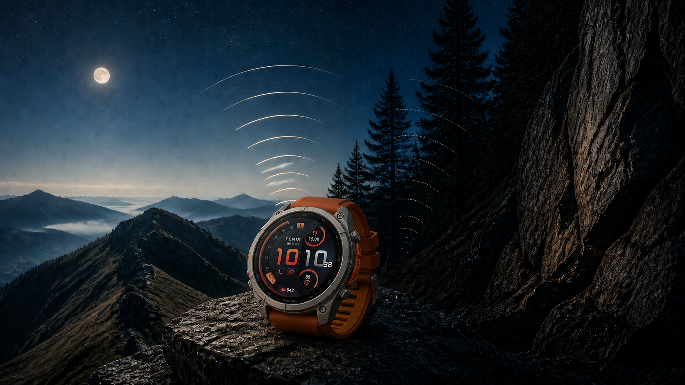

分かりやすく一言で言うと
今回の選び方は、機能表を上から追うよりも、まず「ケース素材」「通信」「サイズ」の3点に絞ると見えやすくなります。
標準のfēnix 9は148,000円から。fēnix 9 Proはシリーズで初めてチタンケースを採用し、178,000円から。さらにLTEと衛星通信を備えるfēnix 9 Pro inReachは198,000円からです。ただし、inReachは買った日から無条件でどこでも使える機能ではありません。別契約、通信エリア、利用地域の規制、衛星が見える環境などを先に確認する必要があります。
こんな人に向いています
- fēnix 9：価格を抑えつつ、サファイアレンズ、地図、トレーニング機能を重視する人
- fēnix 9 Pro：ケースまでチタンであること、AMOLEDの明るさ、Pro専用の装備に価値を感じる人
- fēnix 9 Pro inReach：スマートフォンを持たない場面でのLTE通信や、条件付きの衛星通信を必要とする人
- 発売直後には決めない人：手首への収まり、重量、通信エリア、契約条件を店頭と公式情報で確かめたい人
「チタンベゼル」と「チタンケース」は同じではありません
こんにちは、ろぶーです。
fēnix 9シリーズで、いちばん気になったのはチタンです。ただし、ここは言葉を丁寧に見たほうがよさそうです。
標準のfēnix 9は、公式の製品概要では「FRPケース／チタンベゼル」。一方、fēnix 9 ProとPro inReachは「チタンケース／チタンベゼル」です。正面から見えるベゼルだけでなく、本体ケースにもチタンを使うのがProの大きな違いです。Garminは、fēnixシリーズとして初のチタンケースで、軽量な装着感と耐久性を両立したと説明しています。
とはいえ、「Proなら標準モデルより必ず軽い」という意味ではありません。たとえば公式一覧の47mm AMOLEDでは、fēnix 9が75g、fēnix 9 Proが78gです。51mm AMOLEDでも標準が91g、Proが99g。素材の魅力と完成重量は分けて考えたいところです。
全モデルはサファイアレンズ、10ATMの防水性能、40mのダイビング対応、64GBの内蔵メモリをうたっています。標準モデルも「安価な簡略版」というより、ケース素材とPro専用機能をどこまで求めるかで選ぶ構成です。
日本では9月3日予約開始、9月10日発売
Garmin Japanの発表では、fēnix 9シリーズは全22モデル。2026年9月3日（木）に予約を開始し、9月10日（木）に発売します。
価格は組み合わせが多いため、まずシリーズ別の幅で見るのが分かりやすいです。
| シリーズ | 日本価格（税込） | 主なケース素材 | サイズ |
|---|---|---|---|
| fēnix 9 | 148,000〜178,000円 | FRPケース／チタンベゼル | 43 / 47 / 51mm |
| fēnix 9 Pro | 178,000〜198,000円 | チタンケース／チタンベゼル | 43 / 47 / 51mm |
| fēnix 9 Pro inReach | 198,000〜238,000円 | チタンケース／チタンベゼル | 47 / 51mm |
最安価格で比べると、標準からProへは30,000円、ProからPro inReachへは20,000円の差です。ただし、AMOLEDかDual Powerか、サイズ、DLCコーティング、レザーバンドの有無でも価格は変わります。価格差だけで上位・下位を決めず、欲しい表示方式と手首サイズまで合わせて比べるのがよさそうです。
Proを選ぶ理由は、チタンケースだけではない
ProのAMOLEDモデルは最大3,000ニト。51mmにはfēnixシリーズ史上最大とされる1.5インチAMOLEDディスプレイがあります。LEDフラッシュライトにはグリーンの発光色が加わり、地図エンジンやスタミナ指標も更新されました。
また、シリーズ共通の新機能「Garmin Epic」は、複数日にわたるアクティビティを写真や健康・パフォーマンスデータとまとめ、Garmin Connect上でひとつのストーリーとして振り返るものです。遠征や縦走、複数日レースを一日ごとのログだけで終わらせたくない人には、今回らしい更新だと思います。
バッテリーはモデルと設定で大きく変わります。代表例では、Pro AMOLED 51mmのスマートウォッチモードが約31日、Pro Dual Power 51mmはソーラー充電条件を含め約57日です。数字を見るときは、常時表示やソーラーの照度・時間条件も一緒に確認してください。
inReachは「安心」より先に、制限を読む

Pro inReachは、LTE接続時にウォッチ単体で音声通話、メッセージ、LiveTrackを利用でき、携帯電話の通信圏外では衛星通信によるメッセージ、位置情報チェックイン、SOS送信に対応すると案内されています。魅力は明確ですが、購入前に次を確認したいです。
- 別途サブスクリプションが必要：日本の発表では「INREACH ENABLED PLAN」は月額1,180円で、LTE-Mは無制限利用可能とされています。
- 衛星通信は発売時点で未提供：日本では2026年秋からの対応予定です。9月10日の発売と同時に衛星通信まで使える、と受け取らないほうが安全です。
- 通信は場所と環境に左右される：LTEや衛星接続はすべての国・地域で使えるわけではなく、建物、樹木、気象条件などの影響も受けます。
- 他のinReach端末と同じ前提ではない：Garminは、このウォッチの衛星通信とSOSには、ほかのinReachデバイスと比べて重要な制限があり、状況によってはSOSを含む通信機能が利用できない場合があると明記しています。
- 地域の法規制を確認する：衛星通信デバイスの使用が規制・禁止される国や地域があります。居住地だけでなく、渡航先も確認が必要です。
- 相手側の利用環境も確認する：メッセージや通話はGarmin Messengerアプリを通じて利用します。
つまり、Pro inReachは「これ一台があれば必ず救助につながる」と断定して選ぶものではありません。自分が行く場所でのサービス、上空の見通し、バックアップの連絡手段まで含めて準備するための選択肢です。登山や海上での安全装備は、時計ひとつに集約しない前提で考えたいです。
ろぶーなら、まずPro 47mmを基準に考えます
チタンケースを今回の魅力として受け取るなら、Proが本命です。そのなかでも47mmは、43mmより表示に余裕があり、51mmより装着感を試しやすい中間サイズ。まずPro 47mmを基準にして、画面の大きさを優先するなら51mm、手首への収まりを優先するなら43mmへ動かすと整理しやすそうです。
一方、通信機能が目的でなければ、Pro inReachを選ぶ理由は薄くなります。20,000円以上の価格差に加え、月額契約と通信条件の確認が続くからです。反対に、スマートフォンなしでのLTE通信や、条件を理解したうえで衛星通信を使いたい人には、追加費用を検討する意味があります。
標準のfēnix 9も、サファイアレンズ、チタンベゼル、地図、長時間バッテリーという土台は十分に強い製品です。「ケースまでチタンでなくてもいい」と割り切れるなら、148,000円からの標準モデルはかなり現実的です。
発売前の結論は、こうです。素材で選ぶならPro。通信で選ぶならPro inReach。ただしinReachは、価格より先に制限を読む。この順番なら、22モデルの多さに振り回されにくいと思います。
公式出典
- Garmin Japan：fēnix 9シリーズ プレスリリース
- Garmin US：fēnix 9 / fēnix 9 Pro プレスリリース
- Garmin Japan：fēnix 9 47mm 製品ページ
- Garmin Japan：fēnix 9 Pro 47mm 製品ページ
- Garmin Japan：fēnix 9 Pro inReach 51mm 製品ページ
情報確認日：2026年9月4日（日本時間）。本稿は実機レビューではなく、公開日時点の公式情報をもとに構成しています。価格、提供時期、契約条件は変更される場合があります。